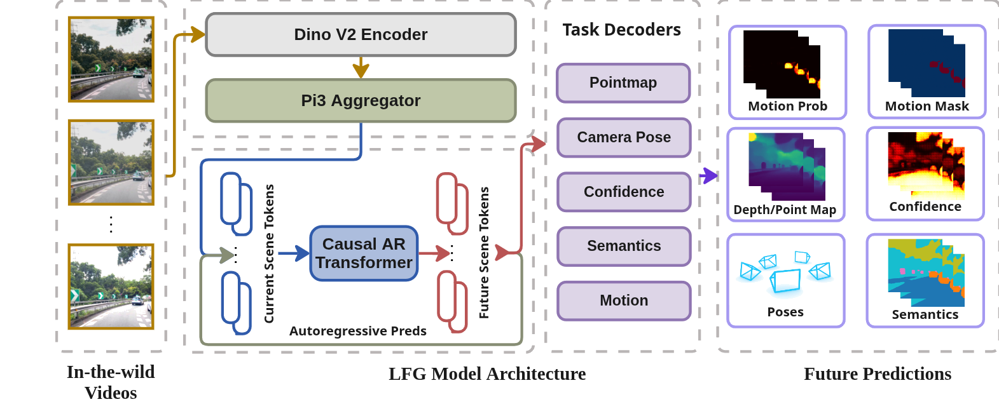

LFG: Learning to Drive is a Free Gift
Large-Scale Label-Free Autonomy Pretraining from Unposed In-The-Wild Videos
CVPR 2026
Abstract
Ego-centric driving videos available online provide an abundant source of visual data for autonomous driving, yet their lack of annotations makes it difficult to learn representations that capture both semantic structure and 3D geometry. Recent advances in large feedforward spatial models demonstrate that point maps and ego-motion can be inferred in a single forward pass, suggesting a promising direction for scalable driving perception. We therefore propose a label-free, teacher-guided framework for learning autonomous driving representations directly from unposed videos.
Unlike prior self-supervised approaches that focus primarily on frame-to-frame consistency, we posit that safe and reactive driving depends critically on temporal context. To this end, we leverage a feedforward architecture equipped with a lightweight autoregressive module, trained using multi-modal supervisory signals that guide the model to jointly predict current and future point maps, camera poses, semantic segmentation, and motion masks.
Multi-modal teachers provide sequence-level pseudo-supervision, enabling LFG to learn a unified pseudo-4D representation from raw YouTube videos without poses, labels, or LiDAR. The resulting encoder not only transfers effectively to downstream autonomous driving planning on the NAVSIM benchmark, surpassing multi-camera and LiDAR baselines with only a single monocular camera, but also yields strong performance when evaluated on a range of semantic, geometric, and qualitative motion prediction tasks.
We emphasize that the novelty of LFG lies more within the pretraining paradigm than the model architecture itself.
Method at a Glance
LFG Architecture. Starting from unposed single-view driving clips, a pretrained π3 backbone encodes N observed frames into latent scene tokens. A lightweight causal autoregressive transformer rolls out M future tokens, which a shared decoder maps to point maps, camera poses, semantic segmentation, confidence maps, and motion masks for all N+M frames. Multi-modal teachers provide pseudo-supervision, enabling LFG to learn a unified pseudo-4D representation that transfers effectively to downstream planning.
Depth Estimation
Click on the image to cycle through: RGB Input → π3 Depth → LFG Depth
LFG predicts depth for both current (observed) and future (predicted) frames, while π3 requires all frames as input.
Semantic Segmentation
Click on the image to cycle through: RGB Input → SegFormer → LFG Semantics
LFG outperforms its SegFormer teacher on both current (observed) and future (predicted) frame predictions.
Motion Prediction
Click on the image to cycle through: RGB Input → LFG Motion → Pseudo GT
LFG correctly identifies dynamic objects (vehicles, pedestrians) and separates them from static scene elements.
Point Cloud Reconstruction
Click on the image to cycle through: LFG → π3
LFG preserves geometric structure and camera motion even when predicting future frames (shown in red poses).
Quantitative Results
NAVSIM Planning Benchmark
Single-camera LFG vs BEV-based baselines. Higher is better for all metrics.
| Method | Input | NC | DAC | TTC | C. | EP | PDMS |
|---|---|---|---|---|---|---|---|
| UniAD | 6Cam | 97.8 | 91.9 | 92.9 | 100.0 | 78.8 | 83.4 |
| TransFuser | 3Cam+L | 97.7 | 92.8 | 92.0 | 100.0 | 79.2 | 84.0 |
| Hydra-MDP | 3Cam+L | 96.9 | 94.0 | 94.0 | 100.0 | 78.7 | 84.7 |
| DiffusionDrive | 3Cam+L | 96.8 | 95.4 | 94.7 | 100.0 | 82.0 | 88.1 |
| LFG (Ours) | 1Cam | 98.2 | 93.7 | 94.4 | 100.0 | 79.1 | 85.2 |
L = LiDAR. 1Cam uses only the front-view camera with past temporal frames (3-frame input).
Data Efficiency Comparison
PDMS scores on NAVSIM with varying amounts of labeled training data.
| Method | Input | 1% | 10% | 100% |
|---|---|---|---|---|
| DiffusionDrive | 3Cam+L | 64.9 | 72.6 | 88.1 |
| DINOv3 | 1Cam | 60.0 | 75.8 | 81.4 |
| PPGeo | 1Cam | 61.5 | 65.6 | 74.6 |
| π3 | 1Cam | 56.2 | 77.5 | 82.8 |
| LFG (Ours) | 1Cam | 66.3 | 81.4 | 85.2 |
LFG demonstrates strong data efficiency, matching full-data DINOv3 performance with only 10% labeled data.
Ablation Studies
Component and scaling ablations on NAVSIM (PDMS). Higher is better.
| Setting | 1% | 10% | 100% |
|---|---|---|---|
| Original setting | 66.3 | 81.4 | 85.2 |
| + 2× pretraining data | 76.6 | 82.3 | 84.8 |
| + Longer prediction horizon | 80.5 | 84.4 | 84.8 |
| - Seg, Motion | 64.8 | 77.1 | 84.6 |
| - Autoregressive head | 66.3 | 77.7 | 84.2 |
Scaling pretraining data and extending prediction horizon improve performance, while removing segmentation/motion supervision or the autoregressive head degrades results.
BibTeX
@inproceedings{strong2026lfg,
title={Learning to Drive is a Free Gift: Large-Scale Label-Free Autonomy Pretraining from Unposed In-The-Wild Videos},
author={Strong, Matthew and Chang, Wei-Jer and Herau, Quentin and Yang, Jiezhi and Hu, Yihan and Peng, Chensheng and Zhan, Wei},
booktitle={Proceedings of the IEEE/CVF Conference on Computer Vision and Pattern Recognition (CVPR)},
year={2026}
}